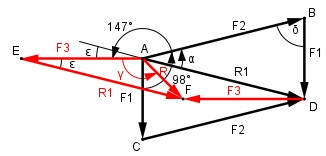

Aufgabe 219 In einem Punkt greifen die Kräfte F1 = 145 N, F2 = 230 N und F3 = 204 N an. Wie groß ist die Größe R der resultierenden Kraft und deren Richtung γ zu F3, wenn F1F2 = 98° und F2F3 = 147°?

Im Dreieck ADB: δ = 180° - 98° = 82° Fall SWS: Cosinussatz: R12 = F12 + F22 - 2 * F1 * F2 * cos δ R12 = F12 + F22 - 2 * F1 * F2 * cos 82° R12 = (145 N)2 + (230 N)2 - 2*145 N*230 N*0,1392° R12 = 64 640,4 N2 |√ R1 = 254,2 N Fall SSW: Sinussatz: R1 F1 ------- = ------- |*sin α sin δ sin α R1 * sin α ------------ = F1 |*sin δ sin δ R1 * sin α = F1 * sin δ |:R1 F1 * sin δ 145 N * sin 82° sin α = ------------ = ----------------- = R1 254,2 N 145 N * 0,9903 = ------------------ = 0,5649 254,2 N α = 34,4° ε = 180° - 147° - α = 180° - 147° - 34,4° = -1,4° Im Dreieck AEF: Fall SWS: Cosinussatz: R2 = F32 + R12 - 2 * F3 * R1 * cos ε R2 = F32 + R12 - 2 * F3 * R1 * cos 1,4° R2 = (204 N)2 + (254,2 N)2 - - 2 * 204 N * 254,2 N * 0,9997° R2 = 2 551,2 N2 |√ R = 50,5 N Fall SSW: Sinussatz: R R1 ------- = ------- |*sin γ sin ε sin γ R * sin γ ----------- = R1 |*sin ε sin ε R * sin γ = R1 * sin ε |:R R1 * sin ε 254,2 N * sin 1,4° sin γ = ------------ = -------------------- = R 50,5 N 254,2 N * 0,0244 = -------------------- = = 0,1227 50,5 N --> γ = 7° oder (180° - 7°) = 173° gewählt 173° (siehe Skizze)